Слепой, бездомный музыкант, одетый как викинг, был центральной фигурой в нью-йоркском авангарде 1960-х годов. Его уважали такие разные музыканты, как Чарли Паркер, Стив Райх и Дженис Джоплин. Очень странный, эксцентричный музыкант и талантливый композитор Луи Хардин (Moondog) сейчас поёт нам из Валгаллы, а мы слушаем. Он делал свои инструменты сам из обычного мусора, тем не менее ему удалось разгадать тайный шифр нашей Вселенной и стать самым влиятельным композитором 20 века. Написал более сотни произведений, включая 81 симфонию, произведения для оркестра, камерных и духовых инструментов.
